Click a thumbnail to open full-size image.

normal_00.png - normal
Very clean; thin 50Hz line; minimal harmonics
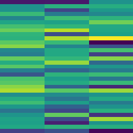
normal_01.png - normal
Standard daily operation; clear 50Hz; faint harmonics
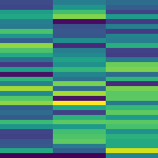
normal_02.png - normal
Morning peak; bright 50Hz; multiple harmonics
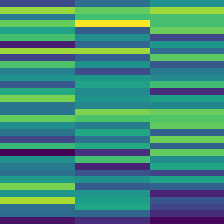
normal_03.png - normal
Industrial area; strong harmonics; heavy loads
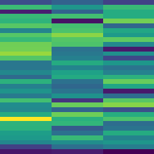
normal_04.png - normal
Evening steady state; stable pattern; moderate brightness
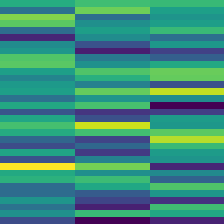
normal_05.png - normal
Light load period; dim overall; minimal harmonics
normal_06.png - normal
Steady state reference; textbook healthy operation
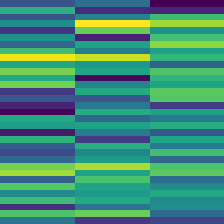
normal_07.png - normal
Commercial loads; HVAC and elevator harmonics
normal_08.png - normal
Motor-dominant loads; motor harmonic signature
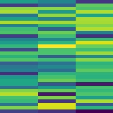
normal_09.png - normal
Mixed residential; moderate brightness and complex pattern
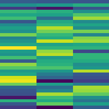
normal_10.png - normal
High-power transmission; very bright; clear harmonics
normal_11.png - normal
Sustained peak load; consistently bright across time
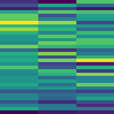
normal_12.png - normal
Evening ramp-up; gradual increase in harmonic content
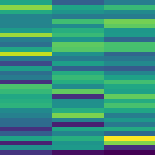
normal_13.png - normal
Industrial peak hours; very bright strong harmonics
normal_14.png - normal
Variable speed drive operation; complex harmonic structure
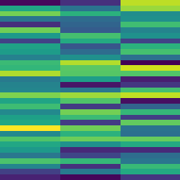
normal_15.png - normal
Regenerative braking event; inverter returning power
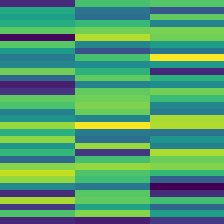
normal_16.png - normal
Distributed solar injection; inverter signature during day
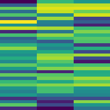
normal_17.png - normal
Grid stabilizing equipment active; compensation signatures
normal_18.png - normal
Transition to night operation; gradually dimming pattern
normal_19.png - normal
Off-peak low load; low amplitude; clean 50Hz (extra sample)
normal_20.png - normal
Solar injection variation; daytime inverter pattern (extra sample)
normal_21.png - normal
Grid support equipment active; capacitors/reactors engaged (extra sample)
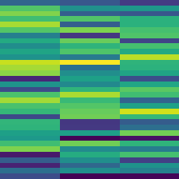
normal_22.png - normal
Extra normal sample; typical variation (auto-added)

anomaly_00.png - anomaly
Frequency swell; main line above 50Hz; over-frequency event
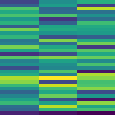
anomaly_01.png - anomaly
Frequency sag; main line below 50Hz; under-frequency event
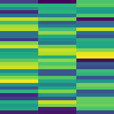
anomaly_02.png - anomaly
Rapid frequency change; main line moves across time; instability
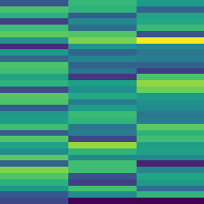
anomaly_03.png - anomaly
Frequency oscillation; wobbling main line; oscillatory instability
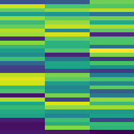
anomaly_04.png - anomaly
Severe frequency deviation; major shift from nominal
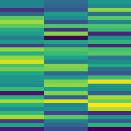
anomaly_05.png - anomaly
Excessive 3rd harmonic; bright 150Hz; possible grounding issue
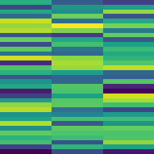
anomaly_06.png - anomaly
High 5th harmonic; bright 250Hz; converter or VFD malfunction
anomaly_07.png - anomaly
Multiple harmonics elevated; severe harmonic pollution
anomaly_08.png - anomaly
Odd harmonics prominent; unusual harmonic pattern
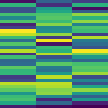
anomaly_09.png - anomaly
Interharmonics visible; frequency components between harmonics
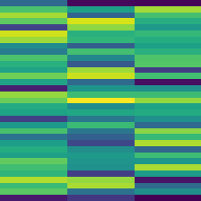
anomaly_10.png - anomaly
Single sharp transient; vertical spike from switching or fault clearing
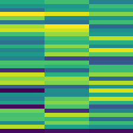
anomaly_11.png - anomaly
Multiple switching transients; repeated vertical spikes
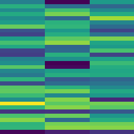
anomaly_12.png - anomaly
Broadband transient; fuzzy bright energy across many frequencies
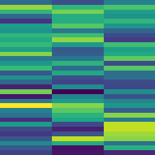
anomaly_13.png - anomaly
Ringing transient; spike followed by damped oscillation
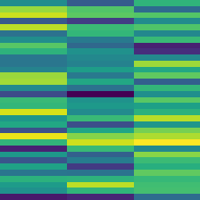
anomaly_14.png - anomaly
Repetitive transient; regular interval spikes indicating intermittent fault
anomaly_15.png - anomaly
Even harmonics present; indicates phase imbalance
anomaly_16.png - anomaly
Sub-harmonic component (25Hz); unusual behavior needing investigation
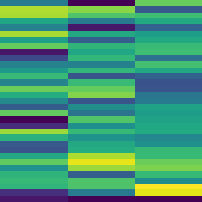
anomaly_17.png - anomaly
Phase shift discontinuity; abrupt change during measurement
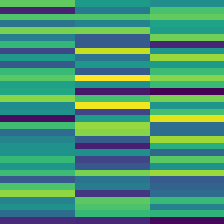
anomaly_18.png - anomaly
Arcing event; chaotic broadband high-energy pattern; critical
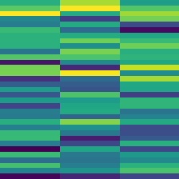
anomaly_19.png - anomaly
Complex multi-event fault; multiple simultaneous anomalies
anomaly_20.png - anomaly
Intermittent arcing; repeating short spikes (extra sample)
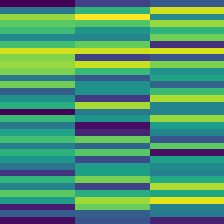
anomaly_21.png - anomaly
Control system hunting; slow oscillations from controller instability (extra sample)
anomaly_22.png - anomaly
Combined harmonic and transient; both distortion and spike present (extra sample)
anomaly_23.png - anomaly
Extra anomaly sample; transient-harmonic mixture (auto-added)